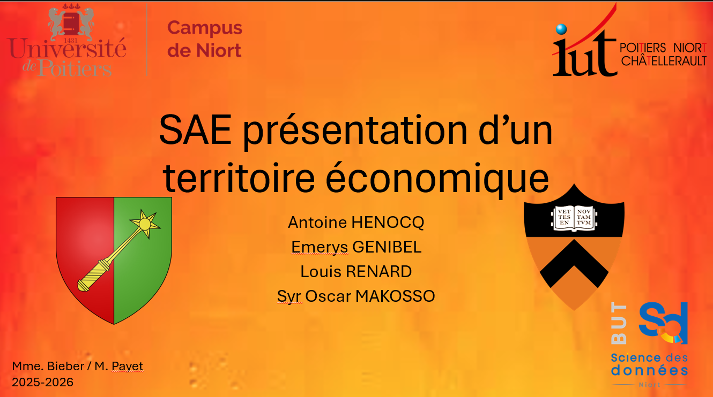
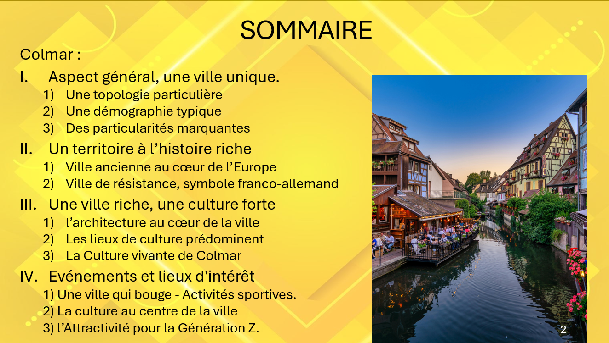
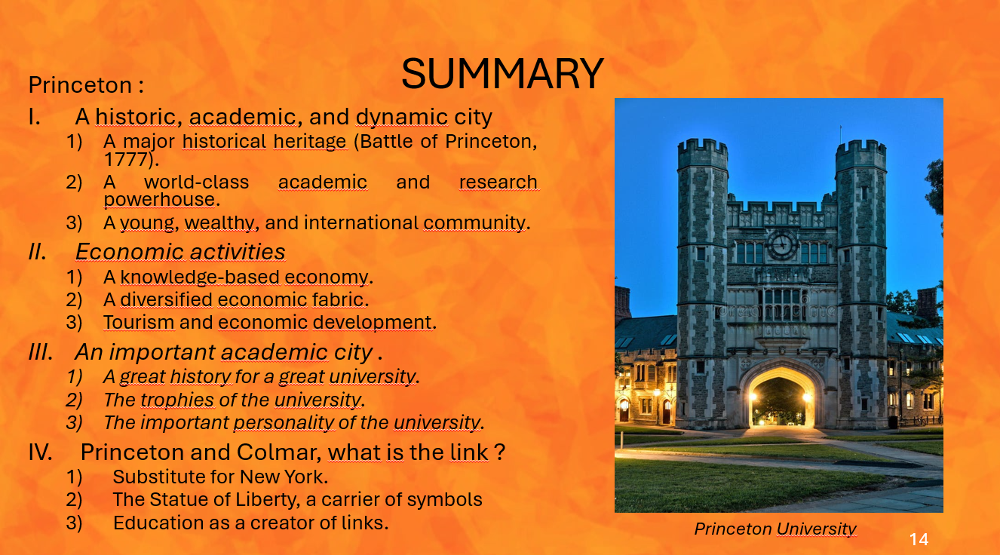

🗄️ SAÉ - Présentation en anglais d'un territoire économique et culturel
Présentation de la ville de Colmar en anglais et en français, en groupe, avec support PowerPoint. Présentation du territoire, de la culture et de l'économie locale.
Ce projet a été parmi les premiers. Bien qu'il n'ait pas de rapport direct avec notre spécialisation technique, il avait plusieurs objectifs : la découverte de la méthodologie SAÉ (type de projet évalué du BUT), apprendre à travailler avec de nouveaux camarades, mettre en pratique nos cours de communication et d'anglais, ainsi que nous habituer à faire des oraux longs dans un amphithéâtre.
Le sujet était de présenter une ville française (en français) ainsi que l'une de ses villes jumelles (en anglais). Nous étions par groupes de 4. Notre groupe a choisi la ville de Colmar et l'une de ses villes jumelles, Princeton (USA). Nous avons également créé un support visuel avec PowerPoint en respectant un style professionnel.
Notre axe d'approche était justement les différents éléments qui ont fait que ces deux villes (qui ne se ressemblent que peu) sont jumelées.
N'étant pas très à l'aise en anglais, ce fut un exercice difficile. De plus, il a fallu que le groupe se découvre et se coordonne malgré les façons de travailler très différentes de chacun. Le travail a quand même porté ses fruits.



- Habitude à communiquer devant un public, en français et en anglais.
- Capacité à rechercher, synthétiser et communiquer l'information.
- Habileté dans la création de supports visuels avec PowerPoint.
- Gestion du travail de groupe et de la gestion de projet.
Mesurer l'importance d'une expression précise et nuancée dans la communication en français et dans une langue étrangère des résultats.
Parmi les apprentissages critiques (éléments à maîtriser dans la formation, à dimension très académique), je pense que ce projet correspond le mieux à celui cité ci-dessus. Étant donné que nous étions évalués sur notre capacité à communiquer différentes informations, il a fallu être à la fois synthétique, précis et pragmatique. De plus, la communication s'est faite en plusieurs langues (français et anglais) ainsi que par différents moyens (oral et PowerPoint). Ce n'est que par des expériences comme celle-ci que l'on se rend compte de l'importance d'appliquer les bonnes techniques de communication.